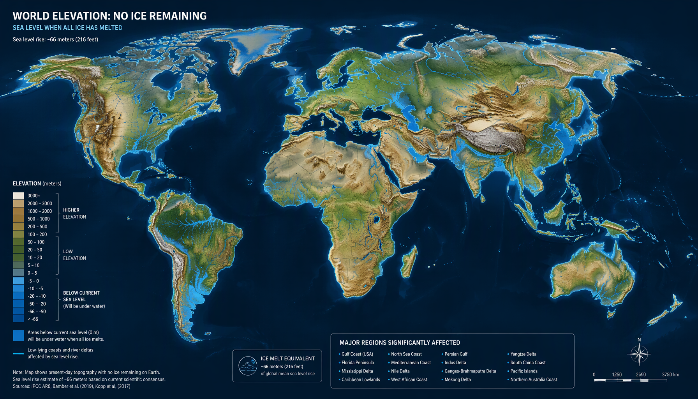
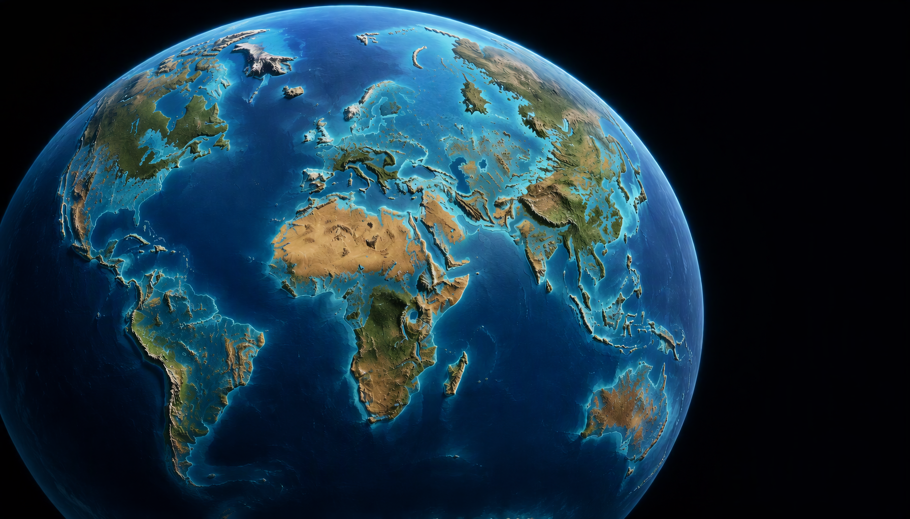
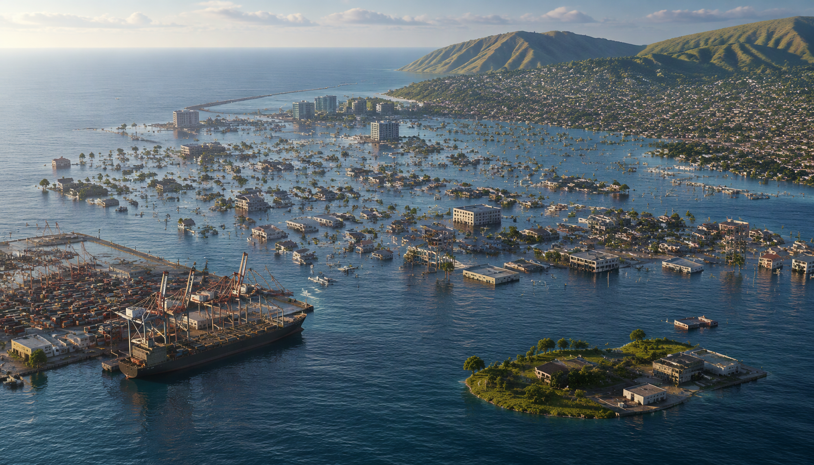
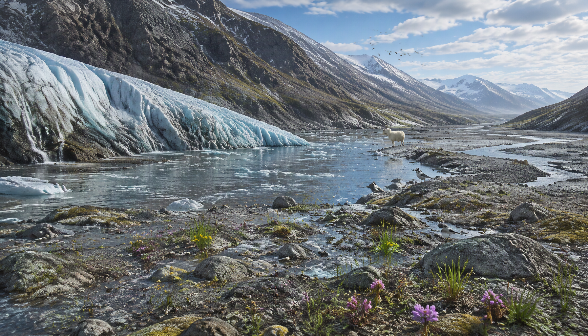

What Will Life Be Like When the World's Last Ice Melts?
Imagine a world where Greenland is green in more than name, Antarctica has lost its vast ice sheet, mountain glaciers have vanished, and the last permanent ice on Earth has disappeared. The coastlines would be almost unrecognizable, many cold-adapted animals would lose their homes, and the climate would be warmer and very different from the one human civilization developed around.
But this would not happen overnight, and it would not simply mean that the ocean rises by one dramatic amount on a single day. Ice sheets respond slowly to climate. The final outcome would take place across centuries to millennia, with the details depending on how much the planet warmed, how long it stayed warm, and how ocean and land systems responded along the way.
This guide explores the thought experiment from the sea-level numbers to everyday life: where people could live, what would happen to animals and plants, why some rivers could first swell and later shrink, and why a world without permanent ice would not automatically be a world covered entirely by water.

- What do we mean by “the last ice”?
- How much would the sea rise?
- Would it happen all at once?
- Temperature and weather
- Oceans and currents
- Coastlines and cities
- Rivers, drinking water, and agriculture
- Animals and wildlife
- Plants, forests, and ecosystems
- How would human society adapt?
- How would the land itself change?
- Where would the last ice survive?
- What would life be like?
- Sources and further reading
First, What Does “The World's Last Ice” Mean?
Here, an “ice-free Earth” means the eventual loss of major permanent land ice—not the end of every snowfall or temporary patch of ice. The distinction matters because land ice raises sea level when it melts, while floating ice has a different effect.
Land ice
Glaciers and the Greenland and Antarctic ice sheets rest on land. Their meltwater adds to the oceans and accounts for nearly all of the 65–70 metre sea-level potential.
Floating sea ice
Sea ice already floats, so its direct effect on sea level is tiny. Its importance is in reflecting sunlight, shaping ocean-atmosphere exchange, and supporting polar food webs.
Ice shelves
These floating extensions of land ice add little sea level directly, but they can hold back grounded glaciers. When they thin or collapse, glaciers may flow faster into the ocean.
Seasonal snow
Seasonal snow could still fall in some places. The thought experiment concerns the disappearance of persistent ice sheets and glaciers.
Major coastal and freshwater changes would occur long before the last permanent ice disappeared.
How Much Would the Sea Level Rise?
If the major land-ice stores eventually disappeared, they would add roughly 65–70 metres (215–230 feet) to global mean sea level. This is a measure of the water stored in land ice, not a forecast for this century.
Antarctica accounts for about 58 metres and Greenland about 7.4 metres. Mountain glaciers and smaller ice caps contribute a much smaller amount, but they are important to regional water supplies.
| Ice store | Approximate sea-level equivalent | Why it matters |
|---|---|---|
| Antarctic Ice Sheet | About 58 metres | The largest store of land ice; even partial loss could reshape coastlines worldwide. |
| Greenland Ice Sheet | About 7.4 metres | Its complete loss alone would transform many low-lying coastal regions. |
| Mountain glaciers and smaller land ice | Roughly another fraction of a metre to around a metre, depending on the inventory | Smaller in total volume but vital to many mountain-fed river systems and local water supplies. |
| Floating sea ice | Very small direct contribution | It matters greatly for albedo, polar ecosystems, and ocean-atmosphere interactions even though it already floats. |
That figure is a global average, not a uniform rise at every coast. As an ice sheet loses mass, its gravitational pull on nearby water weakens: sea level can fall close to the melting ice and rise more strongly farther away. Land movement, ocean circulation and winds also affect local outcomes. These patterns are called ice-sheet fingerprints.
Warming seawater also expands, so the eventual sea level in a warmer climate would reflect both added meltwater and thermal expansion. The 65–70 metre figure isolates the potential contribution from land ice.

Would It Happen All at Once?
No. Ice sheets respond to sustained warming over centuries to millennia, and different regions change at different rates. Seasonal sea ice and many mountain glaciers can decline much sooner than the great polar ice sheets.
| Timescale | What could happen | Likely effects |
|---|---|---|
| Already underway | Glaciers are retreating, sea ice is changing and sea level is rising. | More coastal flooding and erosion; pressure on glacier-fed water supplies and ice-dependent habitats. |
| Coming decades | Continued warming drives further glacier and sea-ice loss; sea level keeps rising. | Greater flood risk, saltwater intrusion and adaptation costs. |
| Centuries | Large ice sheets continue responding, and some losses may be difficult to reverse. | More coastal relocation and long-term changes to rivers and ecosystems. |
| Millennia and beyond | Sustained warming could remove much of the major land ice, although rates vary by region. | A radically different coastline and climate; complete loss remains an extreme scenario. |
After the last ice age, global sea level rose by well over 100 metres over thousands of years. That history is not a timetable for the future, but it shows how slowly ice sheets and oceans can respond. NASA's long-term sea-level overview explains why ice-sheet effects can continue for millennia.
For comparison, current estimates for the combined Greenland and Antarctic contribution are far smaller this century—around a metre by 2100 in central estimates, with higher outcomes possible—and could continue increasing beyond 2100. These are not the total contributions from every source of sea-level rise.
How Hot Would Earth Become?
There is no single temperature that follows automatically from losing the ice. The result would depend on greenhouse-gas levels, how long they remain high, ocean heat uptake, clouds, vegetation and other climate feedbacks.
Ice and snow reflect sunlight. When they retreat, darker ocean and land absorb more energy, adding to warming—a process called the ice-albedo feedback. It is especially important near the poles.
This would not turn Earth into Venus or make every region equally hot. The tropics would remain tropical, mountains would still be cooler than nearby lowlands, and local climates would vary. But polar conditions and global patterns of heat and moisture would be very different.
What would weather be like?
As the poles warm, atmospheric circulation, rainfall and storm tracks could shift. Warmer air can hold more water vapour, increasing the potential for heavier rainfall in some places. The exact changes would depend on geography and circulation; it would be misleading to claim every storm would become stronger or every desert would expand.
An ice-free state is not an irreversible switch. If the climate cooled over long periods, glaciers and ice sheets could eventually grow again.
What Happens to the Oceans?
As land ice melts, freshwater enters the oceans at different places and times. It can lower salinity and alter seawater density, which may affect where deep water forms and how currents transport heat and nutrients.
The response would not be uniform. Some currents and regional sea temperatures could change, but the outcome would depend on the rate and location of melting and on atmospheric conditions.
Loss of sea ice would also expose more open water to sunlight, waves and air. This would change polar marine habitats and food webs. Species adapted to ice-covered waters could decline, while others might expand; neither outcome guarantees a healthier ecosystem.
Coastlines, Cities, and Entire Countries
A rise of dozens of metres would put many present-day coastal settlements beyond ordinary flood protection. Ports, airports, power stations, sewage plants, warehouses and dense housing are often concentrated near coasts and river mouths.
Low-lying island states, coral atolls and major river deltas would face especially severe pressure. Saltwater intrusion, erosion and repeated flooding could make places difficult to inhabit even before permanent inundation. The losses would include homes and infrastructure, but also fishing grounds, historic sites and cultural ties.
Impacts would vary by local elevation, land movement, wave exposure and the source of melting. Some communities might build barriers or raise infrastructure; others would have to retreat because protection was too costly or impractical.
Ports and trade
Deep-water ports, container terminals, shipyards, coastal warehouses, and many industrial clusters would need rebuilding or relocation.
Homes and public services
Homes, hospitals, schools, roads, and drinking-water systems in low areas could become unsafe or uneconomic to defend.
Farmland and deltas
Saltwater intrusion, flooding, erosion, and changing sediments would threaten productive coastal farmland and freshwater irrigation.
Migration and culture
Communities would lose ancestral land, historic sites, beaches, fishing grounds, and places tied to local identity.
Relocation would happen over generations, not on the day the last glacier vanished. Governments would face difficult choices about where to rebuild, who pays, and how to support people who cannot afford to move.

Rivers, Drinking Water, and Agriculture
Melting ice would not automatically provide people with more usable freshwater. Most meltwater from the great ice sheets would flow into the oceans. Mountain glaciers matter differently: they store snow and ice and release water during warmer, drier periods.
Faster melting can temporarily increase runoff and the risk of floods, landslides and glacial-lake outburst floods. But as glaciers shrink, the stored ice is lost. Rivers that depend on glacier melt may then have less reliable dry-season flow, although rainfall and seasonal snow remain important.
This matters in parts of the Indus, Ganges, Brahmaputra, Colorado and other mountain-fed basins. The effect would differ from one river to another; glacier loss would not dry every river, but it could complicate irrigation, hydropower, drinking-water supply and ecosystems. The FAO overview of glaciers and water security explains this role.
Rising seas can also push saltwater into coastal aquifers and contaminate wells. Communities would rely more on rainfall, reservoirs, groundwater management, desalination and water reuse—systems that need energy, investment and maintenance.
What Happens to Animals?
Wildlife would not respond in one uniform way. Some species would lose essential habitat, others might move into newly suitable areas, and many would struggle if food, breeding sites or seasonal cues changed faster than they could adapt.
Polar animals lose the ice beneath their lives
Polar bears use sea ice to hunt seals; seals use it to rest and raise pups; and sea-ice algae support parts of the Antarctic food web, including krill. Less ice changes where and when food is available. Some populations could decline, while other species may shift their ranges. Open water does not automatically mean a richer ocean.
Cold-adapted land animals face shrinking refuges
Arctic, tundra and high-mountain species may move poleward or upslope as conditions warm, but there are limits: a species already near a mountain summit has little higher ground to reach. Animals that depend on snow or ice for shelter, camouflage or breeding are especially vulnerable.
Other animals may spread—but not everywhere
Some insects, reptiles and disease-carrying organisms could expand into warmer regions, altering food webs and exposing wildlife or people to unfamiliar pests. But soil, water, competition and barriers such as roads and farms limit migration. Protected areas and wildlife corridors can help, but cannot preserve every species if its habitat disappears.
Plants, Forests, and Entire Ecosystems
Vegetation zones would shift as temperature, rainfall, soil moisture and seasons changed. Some forests could expand into formerly cold regions, while heat, drought, fire, pests and competition damage ecosystems elsewhere. Forests and grasslands cannot simply move north at the speed of a changing climate.
Land exposed by retreating glaciers would initially be bare rock or loose sediment, not ready-made farmland. Plants, microbes and animals would gradually colonise it, while soil formation could take a long time.
Coastal wetlands, salt marshes and mangroves need room to move inland as sea level rises. Where cities, farms or cliffs block that movement, these habitats can be squeezed out—reducing wildlife habitat and natural protection from waves and flooding.

How Would Human Society Adapt?
Earth would remain habitable in many inland and elevated regions, but societies would face generations of coastal retreat, warmer conditions and ecosystem change. Housing, transport, energy, water and public services would have to be reorganised.
Ports, fisheries, tourism, agriculture, insurance and transport would all be affected as coastlines and growing conditions changed. Some regions might gain opportunities; others would lose industries, infrastructure and familiar ways of life.
New or expanded inland cities would need reliable water, heat-resilient infrastructure, transport and public services. Rebuilding homes, schools, hospitals and roads on this scale would take generations.
The burden would be unequal. Wealthier communities could better afford protection and relocation, while small island states and low-income coastal communities could face loss of land, livelihoods, heritage and even difficult questions about where people can resettle.
How Would the Land Itself Change?
An ice-free map would not simply be today's continents with the sea lifted by 70 metres. Thick ice now covers parts of Greenland and Antarctica, including bedrock below present sea level. When that weight is removed, the crust slowly rebounds—a process called glacial isostatic adjustment—while some low basins could be flooded.
The final coastlines would therefore depend on both added ocean water and the changing land beneath it. Rebound takes a long time, and erosion, sediment movement and river changes would continue reshaping the landscape.
Where Would the Last Ice Survive?
There is no single glacier that can be named as Earth's last. The final remnants would depend on temperature, elevation, snowfall, ice flow, ocean access and local terrain. The coldest, highest parts of Antarctica are likely candidates for long-lived ice, but East and West Antarctica may respond very differently.
A study published in Nature Climate Change on 30 October 2026 used coupled climate–ice-sheet simulations extending up to 100,000 years. Under the sustained warming conditions modelled, West Antarctica disintegrated over millennia above 2°C, while East Antarctica showed much greater resilience, even under very high warming. This is one model study, not a universal forecast; it highlights the uncertainty and regional differences in ice-sheet behaviour. See the Nature Climate Change study.
Ice sheets flow under gravity and interact with bedrock and ocean water. Some areas can lose ice rapidly while others continue gaining snow or retain ice for a very long time. A completely ice-free Earth is an extreme thought experiment, not an automatic result of crossing one temperature threshold.
What Would Life Be Like on an Ice-Free Earth?
An Earth without major permanent ice sheets and glaciers would still have continents, rivers, oceans and weather, but its coastlines, climate, freshwater systems and ecosystems would be profoundly different. The 65–70 metre figure describes the scale of water stored in land ice—not a near-term forecast.
The transition would matter most: coastal relocation, changing river flows, lost polar habitats and unequal adaptation would unfold over generations. Ice is not just frozen scenery; it helps shape sea level, climate and human geography.
Sources and Further Reading
The 65–70 metre estimate is the long-term potential from major land-ice loss, not a forecast for this century. These sources cover the main measurements, regional effects, freshwater risks and long-term Antarctic response discussed above.
- Copernicus Climate Change Service — Ice sheets. Sea-level equivalents for the Greenland and Antarctic ice sheets and current monitoring.
- NASA Sea Level Change Portal — Greenland and Antarctic sea-level contribution. Current and long-term context for polar ice-sheet contributions.
- NOAA / U.S. sea-level science — Ice-sheet fingerprints. Explains why sea level changes differently near and far from melting ice.
- Food and Agriculture Organization — Glaciers and water security. The role of glaciers in seasonal river flows and freshwater supply.
- Nature Climate Change — Atmospheric stabilization of the East Antarctic ice sheet under warming (30 October 2026). A long-term model study showing different possible responses of West and East Antarctica.
Suggested Quizzes
Test your survival instincts and explore your favourite post-apocalyptic worlds.


This article describes a hypothetical long-term outcome and should not be read as a prediction that all the world's ice will melt on a particular timeline. Ice-sheet responses are complex, and future sea-level outcomes depend on emissions, warming, ocean conditions, and regional land movement.